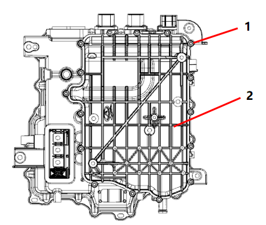
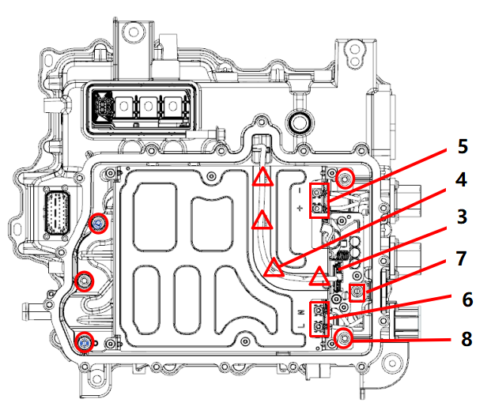
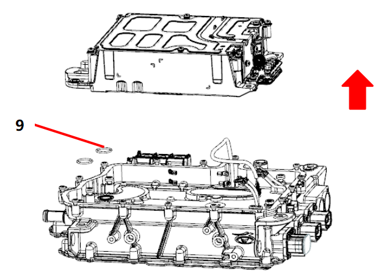

| 序号 | 操作工序 | 装配要求 | 工具/辅料 | 注意事项 |
| 1 | 电源补给系统的拆卸 |
A：参考“电机控制器总成的更换与维修”，拆下电机控制器总成。 B：更换电源补给系统前需吹干净控制器水道内冷却水。 C：将电机控制器总成平放置于拆解台上，注意保证拆解台干净，使用扭力扳手和套筒拆下控制器下盖板外围一共16颗螺栓（图示1），清理色标后放在盛具盒内，然后取下下盖板。  D：使用刀或者剪刀将图示4位置4根扎带剪掉，按压卡扣取下低压接插件（图示3），使用力矩扳手和套筒取下图示5和图示6两处4颗线束固定螺栓。  E：使用力矩扳手和套筒取下图示7位置1颗DCDC接插件连接螺栓。再取下图示8共5颗电源补给系统固定螺栓。 F:向上取下电源补给系统，然后取下2个电源补给系统水道密封圈（图示9）并报废  |
扭力板手、套筒、剪刀 |
1、拆卸过程避免异物进入控制器内部。 2、更换电源补给系统前需吹干净控制器水道内冷却水 |
| 2 | 电源补给系统的装配 |
A：装配前将新水道密封圈装配至图示位置槽内，然后将电源补给系统放入控制器中。 B：使用扭力扳手和套筒对角拧紧电源补给系统5颗固定螺栓（图示1），拧紧力矩11Nm±1Nm。拧紧DCDC输出正接插件与电源补给系统连接螺栓（图示2位置），拧紧力矩6.5Nm±0.5Nm。 C:使用扭力扳手和套筒固定高压线束2颗螺栓和OBC接插件线束2颗螺栓，拧紧力矩1.7Nm±0.1Nm。装配时注意按下图，区分正负极和火零线。 D：将电源补给系统低压线束接头插入图示3位置，轻拔接插件确认连接可靠。然后将线束使用4根扎带固定至电源补给系统壳体图示4位置。 E：装配电机控制器总成下盖板，使用力矩扳手和套筒对角拧紧电机控制器总成下盖板16颗螺栓，拧紧力矩6.5Nm±0.5Nm。 F：参考“电机控制器总成的更换与维修”第2条，装配电机控制器总成。 G：装配完成后进行水道气密检测和腔体气密检测，然后装配透气阀。 |
扭矩扳手，套筒，胶枪 |
1、装配时避免异物进入控制器内部； 2、注意装配时各螺栓拧紧力矩，按照要求执行； 3、装配时需对角拧紧螺栓。 |
| 3 | 确认 | 清理检查电驱动系统总成外观 | / |